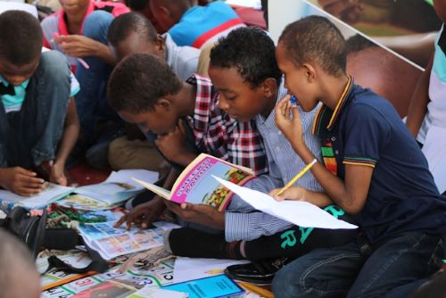

Nossos Projetos
Conheça nossas iniciativas sociais e veja como você pode se envolver.
Projeto Educação
O Projeto Educação oferece atividades de reforço escolar, leitura, arte e cidadania para crianças em situação de vulnerabilidade. O objetivo é fortalecer o aprendizado e abrir novas oportunidades para o futuro.
Saiba mais

Projeto Saúde
O Projeto Saúde promove campanhas de prevenção, oficinas sobre qualidade de vida e apoio a famílias em comunidades carentes, com acompanhamento e orientação de voluntários especializados.
Saiba mais
Seja um Voluntário
Tem interesse em participar de nossos projetos? Cadastre-se aqui e faça parte da transformação social!
Como Doar
Você pode apoiar financeiramente nossas ações sociais. Em breve lançaremos nossa plataforma de doações online. Fique atento!